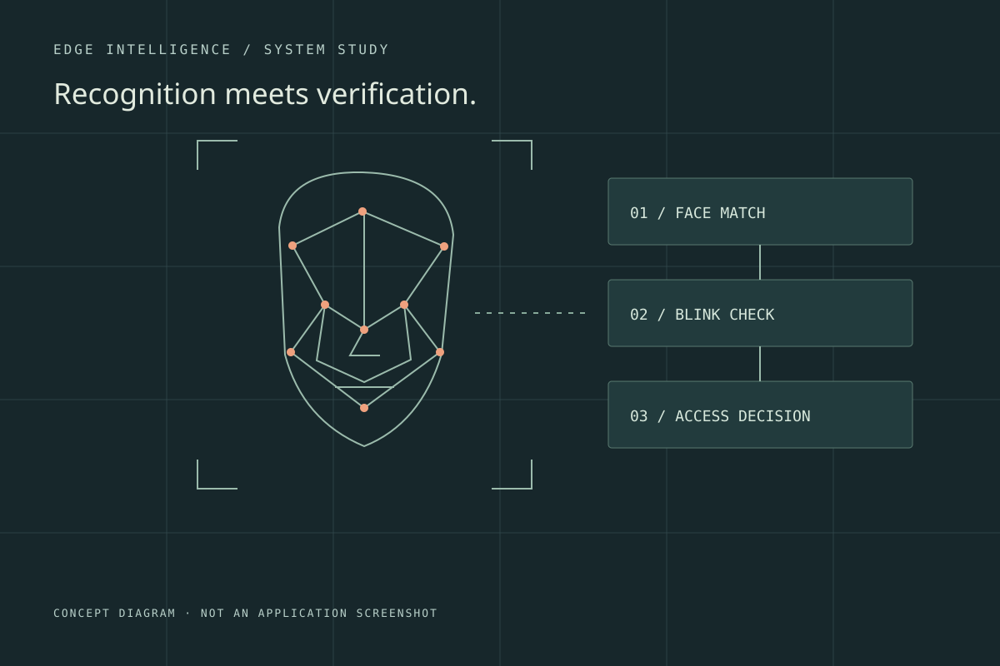
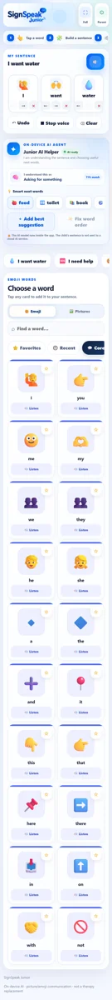
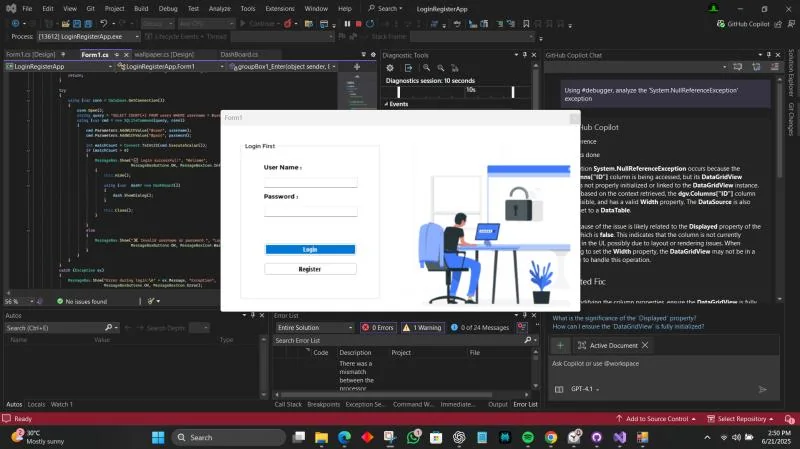

01 / Applied AI

SignSpeak
Applied AIBringing sign recognition, speech, and an articulated 3D hand into one learning experience.
COMPUTER ENGINEERING UNDERGRADUATE
Curious about how things work.
Driven to build what comes next.
I connect software, applied AI, and thoughtful design to turn engineering ideas into things people can use.
01 / SELECTED WORK
A closer look at the systems I build,
the problems they address, and the thinking behind them.
Bringing sign recognition, speech, and an articulated 3D hand into one learning experience.

A Sri Lanka travel companion connecting personalized itineraries, local context, and AI assistance.

A webcam-based authentication prototype combining face embeddings, blink checks, and a local control interface.

A crop-health prototype that turns leaf images into paddy disease and tea-quality assessments.

A voice-driven Windows assistant connecting conversation, camera input, and practical desktop controls.

A cinematic competition website backed by participant registration and organizer workflows.

A child-friendly sentence builder with speech output and locally running word suggestions.

A Windows application bringing customer records, rooms, and reservations into a single workflow.
02 / THE PERSON BEHIND THE PROJECTS
I’m a Computer Engineering undergraduate at General Sir John Kotelawala Defence University, exploring the space where software meets the physical world.
My work spans gesture recognition, desktop automation, application development, and visual communication. I enjoy understanding a problem from the system underneath to the interface someone actually uses.
I’m interested in applied AI, robotics, embedded systems, and research that connects an idea to a useful working prototype.
03 / TOOLS & APPROACH
Technologies used across my projects.
A practical toolkit, shaped by the work.
LEARNING / SELECTED CERTIFICATIONS
Learning across programming, connected devices, and the hardware behind the software.
View credentials on LinkedIn (opens in a new tab)Alison
Cisco Networking Academy
Cisco Networking Academy
Cisco Networking Academy
University of Moratuwa · Credential zvrZ1bu7Nb
University of Moratuwa · Credential 0NJhYjmvEi
04 / EXPERIENCE & RECOGNITION
Engineering projects, creative work, and the communities that connect them.
View professional profile (opens in a new tab)Helped organize the KDU career fair with the Faculty of Computing–EICU and fellow student chapters.
SignSpeak with team Quantum-X: sign recognition and an interactive learning experience.
AI Buildathon, IEEE Computer Society of KDU.
Programming competition participant with team TheKernelCrew. Certificate of participation issued by IEEE.
Inter-university digital art competition, IEEE Computer Society of KDU.
Editorial and design leadership for the KDU Electronic Robotics and Innovation Club, including Robotics Week, INSPIRE, and SPARK.
Early industry exposure alongside my path into computer engineering.
05 / VOLUNTEERING & COMMUNITY
Working with others to create opportunities,
share knowledge, and support learning.
Alongside engineering, I contribute to student communities through educational outreach, event coordination, and creative leadership.
View volunteering on LinkedIn (opens in a new tab)SELECT A ROLE TO EXPLORE ↓
Leading a student-led community project supporting educational access. A chance to bring people together around learning and service.
Working with fellow volunteers on educational support, sharing responsibility for a community initiative built around access to learning.
Helping organize Career Fair 2026 alongside the Faculty of Computing–EICU and fellow student chapters, connecting students with professional opportunities.
Contributing editorial and design work to the club’s activities, including Robotics Week 2026, INSPIRE, and SPARK. Using visual communication to help the student engineering community share its ideas.
06 / LET’S CONNECT
For internship opportunities, research conversations, or a project worth building together.
Say hello